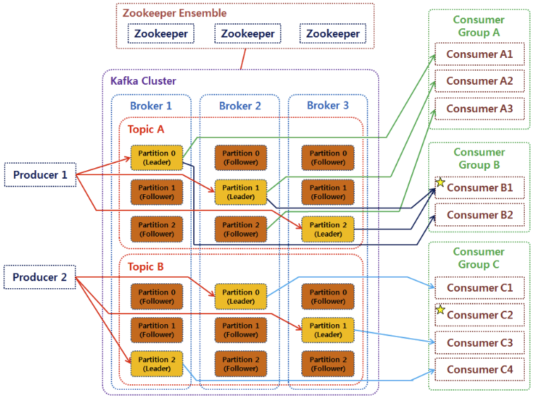

MLOps for MLE - 15
Summary
메시징 시스템에 대한 정보
Kafka 의 전체 아키텍처에 대한 정보
실습을 진행했던 코드를 보고싶으시다면 여기를 눌러주세요
실습
1. 메시징 시스템
메시징 시스템 (Message System) : 서로 다른 어플리케이션끼리 정보를 교환하기 위해 메시지의 생성, 전송, 전달 및 저장을 가능하게 하는 시스템
대표적으로 Kafka, RabbitMQ, Active MQ, AWS SQS, Java JMS 등이 있음
메시지 : 하나의 entity 에서 다른 하나의 entity 로 정보를 전송하는 데 사용되는 통신 아티팩트
이러한 시스템은 주로 하나의 어플리케이션이 여러 외부 어플리케이션이나 하나 이상의 데이터 소스로부터 데이터를 받는 어플리케이션에 의해 처리된 데이터를 전달받고 싶을 때 사용함
메시징 시스템은 메시지 생산자 (message producer) 와 메시지 소비자 (message consumers) 사이에 약한 결합성 (loose coupling) 을 갖도록 함
약한 결합성 : 한 쪽이 끊기거나 변경이 있어도 다른 쪽에는 미치는 영향이 작은 것
메시징 시스템을 이용하면 메시지 생산자와 소비자는 서로를 알지 못함
이러한 메시징 시스템의 특징은 동적이고, 신뢰성 있고 유연한 시스템을 구현할 수 있도록 해주며, 그에 따라 시스템의 나머지 부분에 영향을 주지 않고 하위 어플리케이션의 전체적인 구성을 변경할 수 있음
또한 높은 확장석과 서로 다른 네트워크 사이의 쉬운 통합성과 안정성이 있음
메시징 시스템의 안정적이고 확장 가능한 특징 때문에, 많은 개발자들이 비지니스와 컴퓨팅 사이언스 문제를 해결하기 위해 사용하고 있음
Ex) 워크플로우, 네트워크 관리, 통신 서비스, 고객 관리, 일기 예보 시스템 등
1.1 용어 정리
Message Oriented Middleware (MOM)
- 독립된 어플리케이션 간에 데이터를 주고받을 수 있도록 하는 시스템 디자인
- 함수 호출, 공유메모리 등의 방식이 아닌, 메시지 교환을 이용하는 중간 계층에 대한 인프라 아키텍처
- 분산 컴퓨팅이 가능해지며, 서비스간의 결합성이 낮아짐
- 비동기 (asynchronous) 로 메시지를 전달
- Queue, Broadcast, Multicast 등의 방식으로 메시지를 전달
- Publish/Subscribe (Pub/Sub) 구조
- 메시지를 발행하는 Publisher, 메시지를 소비하는 Subscriber 로 구성
Message Broker
- 메시지 처리 또는 메시지 수신자에게 메시지를 전달하는 시스템이며, 일반적으로 MOM 을 기반으로 구축됨
Mesage Queue (MQ)
- Message Broker 와 MOM 을 구현한 소프트웨어 (RabbitMQ, ActiveMQ, Kafka 등)
Advanced Message Queueing Protocol (AMQP)
- 메시지를 안정적으로 주고받기 위한 인터넷 프로토콜
- MOM 은 메시지 전송 보장을 해야하므로 AMQP 를 구현
(Kafka 는 AMQP 를 구현한 MOM 시스템임)
2. Kafka
2.1 Features
Kafka 는 Open-source Distributed Event Streaming Platform 임
Event Streaming : 데이터베이스, 센서, 모바일기기, 어플리케이션 등과 같은 곳에서 발생하는 데이터를 event stream 형태로 저장해서 나중에 검색할 수 있도록 하는 것
-> 발생하는 데이터를 실시간으로 처리하고, 필요에 따라서 데이터가 또다른 target 시스템으로 event stream 을 라우팅 해주는 것
Event Streaming Platform
- Event stream 을 실시간으로 처리하고 계속 쌓이는 데이터를 지속적으로 보관하다가 그 데이터를 쓰려고 하는 다른 target 시스템들이 가져갈 수 있도록 제공
Publish/Subscribe (Pub/Sub) 구조
- 다른 시스템에서 데이터를 가져와서 Kafka 에 publish 하거나 Kafka 로부터 데이터를 subscribe 할 수 있는 기능을 제공
Decoupling
- Kafka 에서는 Pub/Sub 구조를 구현하기 위해 Producer 와 Consumer 가 존재함, 두 객체는 서로 의존적이지 않고 완벽하게 분리되어 있음
- Producer : Kafka 에 event 를 Publish 하는 client application
- Consumer : Kafka 로부터 event 를 Subscribe 하는 client application
2.2 Kafka Architecture

3. Kafka Components
3.1 Broker
브로커 (Broker) : 메시징 서비스를 담당해주는 Kafka 서버 또는 Kafka 시스템을 말함, 하나의 브로커는 하나의 Kafka Broker Process 를 의미
프로세스를 구동하는 방법에 따라 다양한 방법으로 클러스터를 구성할 수 있는데 주로 단일 브로커가 아닌 다중 브로커를 사용함
-> 브로커가 여러 개일 경우, 각각의 브로커들은 ID 로 식별함
브로커의 주요 역할은 토픽 (Topic) 내의 파티션 (Partition) 들의 분산, 유지 및 관리하는 것
3.2 Kafka Cluster
Kafka 클러스터는 여러 개의 브로커로 이루어진 집합체를 말함
일반적으로 최소 3대 이상의 브로커를 하나의 클러스터로 구성함
3.3 Topic
토픽이란 브로커에서 event (data) 를 관리하는 “기준” 또는 어떤 event 를 저장할 지를 정하는 “주제” 임
토픽은 파일 시스템의 “폴더” 와 같고, event 는 폴더 속의 “파일” 과 같음
3.4 Partition
토픽에는 파티션이 존재하며 모든 파티션들은 Producer 로부터 전달된 데이터를 보관하는 역할을 함
-> 리더 파티션 (Leader Partition): Producer 또는 Consumer 와 직접 통신하며 read 와 write 연산을 담당함
-> 팔로워 파티션 (Follower Partition): Producer 에 의해 리더 파티션으로 전달된 데이터를 복제하여 저장하고 리더 파티션이 속해있는 브로커에 장애가 발생하면 팔로워 파티션이 리더 파티션의 지위를 가지게 됨
Replication Factor 에 따라 리더 파티션과 팔로워 파티션의 개수가 정해짐
Ex) Replication Factor 가 1이라면 리더 파티션만 존재, 3이라면 하나의 리더 파티션과 두개의 팔로워 파티션을 가짐
3.5 Zookeeper
주키퍼란 분산 시스템에서 시스템 간의 정보 유지, 상태 체크, 서버들 간의 동기화 등을 처리해주는 분산 코디네이션 서비스임
직접 어플리케이션 작업을 조율하지 않고, 조율하는 것을 쉽게 개발할 수 있도록 도와줌
API 를 이용하여 동기화를 하거나 마스터 선출 등의 작업을 쉽게 구현할 수 있게 해줌
위의 카프카 아키텍쳐 그림에서 주키퍼 앙상블이란 주키퍼 서버의 클러스터를 뜻함
하나의 주키퍼 서버에 문제가 생겼을 경우, 주키퍼 서버들에 쌓이는 데이터를 기준으로 일관성을 맞추기 때문에 클러스터는 보통 홀수로 구축하며 최소 3개에서 일반적으로 5개를 권장함
주키퍼에서도 파티션처럼 하나의 리더 서버가 있고, write 를 담당함
나머지 팔로워 서버들은 read 를 담당함
3.6 Producer & Consumer
Producer 는 “메시지를 생산” 해서 브로커의 토픽으로 메시지를 보내는 역할을 하는 어플리케이션 또는 서버임
- 데이터를 전송할 때 리더 파티션을 가지고 있는 브로커와 직접 통신함
- 원하는 토픽의 파티션에 전송만하며 이후에 어떤 Consumer 에게 전송되는 지는 신경쓰지 않음
Consumer 는 토픽의 파티션에 저장되어 있는 “메시지를 소비” 하는 역할을 하는 어플리케이션 또는 서버임
- 데이터를 요청할 때 리더 파티션을 가지고 있는 브로커와 통신하여 토픽의 파티션으로부터 데이터를 가져감
- 토픽의 특정 파티션만 구독하는 Consumer 를 운영 or 1개 이상의 Consumer 로 이루어진 Consumer 그룹을 운영
- 어떤 Producer 에게서 메시지가 왔는지는 관심이 없고, 원하는 토픽의 파티션을 읽어서 필요한 메시지만 받음